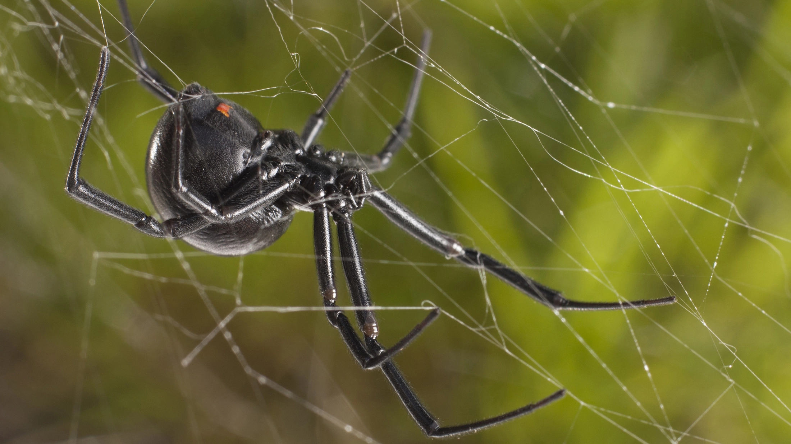

SPIDER

|
Spiders (order Araneae) are air-breathing arthropods that have eight legs, chelicerae with fangs generally able to inject venom, and spinnerets that extrude silk. They are the largest order of arachnids and rank seventh in total species diversity among all orders of organisms. Spiders are found worldwide on every continent except for Antarctica, and have become established in nearly every land habitat. As of August 2022, 50,356 spider species in 132 families have been recorded by taxonomists. However, there has been debate among scientists about how families should be classified, with over 20 different classifications proposed since 1900. Anatomically, spiders (as with all arachnids) differ from other arthropods in that the usual body segments are fused into two tagmata, the cephalothorax or prosoma, and the opisthosoma, or abdomen, and joined by a small, cylindrical pedicel, however, as there is currently neither paleontological nor embryological evidence that spiders ever had a separate thorax-like division, there exists an argument against the validity of the term cephalothorax, which means fused cephalon (head) and the thorax. Similarly, arguments can be formed against use of the term abdomen, as the opisthosoma of all spiders contains a heart and respiratory organs, organs atypical of an abdomen. Unlike insects, spiders do not have antennae. In all except the most primitive group, the Mesothelae, spiders have the most centralized nervous systems of all arthropods, as all their ganglia are fused into one mass in the cephalothorax. Unlike most arthropods, spiders have no extensor muscles in their limbs and instead extend them by hydraulic pressure. Their abdomens bear appendages that have been modified into spinnerets that extrude silk from up to six types of glands. Spider webs vary widely in size, shape and the amount of sticky thread used. It now appears that the spiral orb web may be one of the earliest forms, and spiders that produce tangled cobwebs are more abundant and diverse than orb-weaver spiders. Spider-like arachnids with silk-producing spigots appeared in the Devonian period about 386 million years ago, but these animals apparently lacked spinnerets. True spiders have been found in Carboniferous rocks from 318 to 299 million years ago, and are very similar to the most primitive surviving suborder, the Mesothelae. The main groups of modern spiders, Mygalomorphae and Araneomorphae, first appeared in the Triassic period, before 200 million years ago. |
|---|